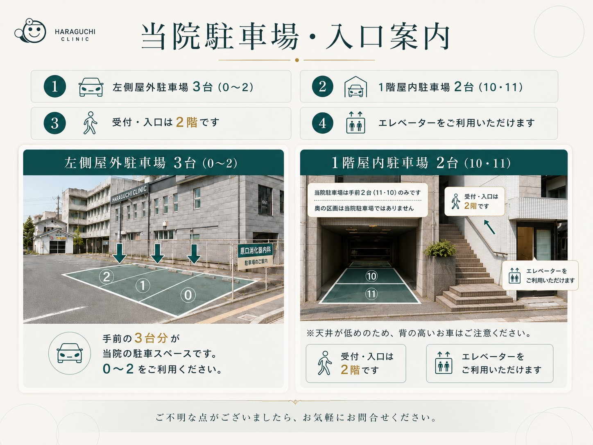
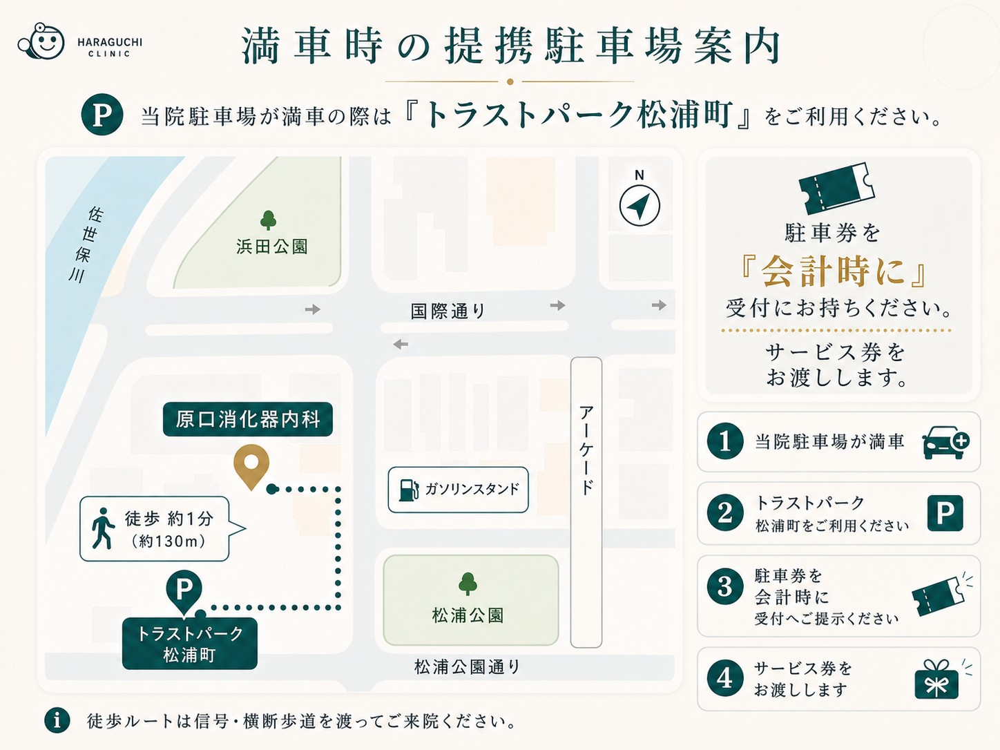

Access
アクセス・駐車場
当院へのアクセス方法と駐車場をご案内いたします。専用駐車場を5台分ご用意しています。
所在地
原口消化器内科
〒857-0052
長崎県佐世保市松浦町5番28号
アーバンパレス米春2F
松浦公園そば、国道35号線沿いのビルです。佐世保市総合医療センターから徒歩約5分。受付・入口は2階です（エレベーターをご利用いただけます）。
バスでお越しの方
西肥バス「松浦町中央公園口」「松浦町国際通り」バス停から徒歩すぐです。
※所要時間は目安です。交通状況により異なります。
お車でお越しの方
当院専用駐車場を5台分ご用意しています。
- 左側屋外駐車場 3台（①〜③）
- 1階屋内駐車場 2台（④・⑤）
- 受付・入口は2階。エレベーターをご利用いただけます。

当院駐車場が満車の場合
提携駐車場の「トラストパーク松浦町」をご利用ください。当院から徒歩約1分（約130m）です。
駐車券を受付へお持ちください。サービス券をお渡しします。

地図が表示されない場合は、こちらからGoogle Mapで表示してください。